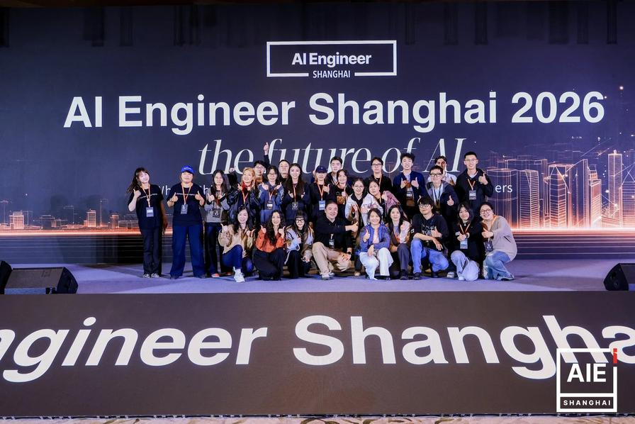

智能体系统
6 组长任务、工具体系、身份授权与多智能体协作。
从线条汇聚到研究现场：57 组讲者，重新审视智能体、世界模型与真实世界的连接。

这不是“谁最出名”的人物盘点，而是我读完大会报告后，对 57 组讲者所做问题的重新整理。我的核心判断是：AI 的竞争已经从模型分数，走向模型、数据、环境、验证与人的系统竞争。
2026.11.05–06 · 上海
官方议程更新至 11 月 5 日 [2]
大会在 11 月 5 日到 6 日举行，官方名录整理为 57 组讲者卡片；约 1600 的两日参会规模，是主办方给出的初步估算。第一天更偏开放模型、智能体和基础设施，第二天明显转向世界模型、Physical AI 和 AI 原生产品。这个议程变化本身就很有意思：讨论重心正在从“模型会不会回答”，走向“系统能不能行动，行动之后谁负责”。
后训练、Agent Harness、沙箱、记忆、推理与企业级工作流。
空间智能、世界—动作模型、端侧决策与真实场景部署。
注：本分享为编辑选择，不构成官方排名；数据与观点按来源标注，厂商自报结果不视为独立复现。
第 13–28 页按行业前置 16 组重点人物；第 29 页寄语与第 30 页致谢下载后，继续翻阅 41 组人物附录。
点击任意卡片进入对应独立页；重点选择不代表官方排名。
前 16 组为重点代表，随后继续收录其余 41 组人物附录。
中文名优先采用公开资料或用户资料；双人联合演讲保留为一组。
资料：AIE 官方 Speakers 名录与 Full Program [12]。点击任意卡片展开课题摘要；未公布摘要的条目仅展示现有题目。Grace Li 官方暂无头像，以占位卡标注，不使用他人照片替代。 点击任意卡片看完整摘要；前面六页负责快速浏览，人物细节在这里随时回查。
这四类不是四条互不相干的赛道。一个智能体要真正工作，必须先有模型与数据底座，再接入工具和环境，最后接受评测；开放生态又让这些环节可以被不同团队替换和改进。也就是说，分类的目的不是贴标签，而是看清一个系统从底层到验收的依赖关系。
长任务、工具体系、身份授权与多智能体协作。
后训练、推理、数据库、记忆、沙箱与数据管线。
真实任务基准、自动验证、可复现性与组织学习。
开放模型、语义层、端侧决策与可复用工程框架。
阅读提示：同一项目可能横跨多类，本分享按主讲课题的主要研究问题只归入一类，避免重复计数。官方名录见 [12]。
越往真实世界走，越不能只问模型强不强。机器人要证明动作真的完成，企业要证明流程真的改善，团队还要决定哪些事情可以交给机器。下面的重点入口只是方便跳转，不代表学术头衔或国籍判断。
世界模型、具身感知、机器人数据与软硬件协同。
设计判断、游戏开发、制造、营销与个人创作。
投资、内容、社区机制与商业组织，单列而不混称技术研究。
两页分类合计57组：6 + 13 + 7 + 7 + 7 + 9 + 8。分类只用于组织阅读，不代表官方排名、学术头衔或国籍。
5 组讲者。共同问题不是“Agent 能不能做”，而是谁授权它做、做到哪一步、出错后由谁负责。
卡片标“华人”者依据用户点名或报告中文实名，不作国籍推断。
资料：用户提供《演讲整理.zip》[16]；官方职务与照片仍以 AIE 讲者名录 [12] 为准。点击卡片可打开完整职务与官方摘要。 接下来：有了边界，还要知道系统是不是真的按边界工作。下一页就进入评测、验证和上下文。
9 组讲者。评测对象从“答案是否正确”扩展到长会话、代码仓库、移动端操作、语音链路与企业数据口径。
华人讲者在本页优先列出，卡片标“华人”。
资料：用户提供《演讲整理.zip》[16]；数字来自报告“详细总结（附）”的讲者自述或案例，不是第三方复测。点击卡片查看官方职务与摘要。 接下来：要运行这些长轨迹、测试和训练任务，底层还需要一套完全不同的基础设施。下一页往下看这一层。
9 组讲者。共同瓶颈不是“有没有 GPU”，而是上下文、镜像、沙箱、存储与网络怎样围绕每次调用重新组织。
中文实名讲者优先列出。
资料：用户提供《演讲整理.zip》[16]。Chen Wang 的中文名在报告写作“王晨/彭晨”，此处保留官方英文名，不把转写差异当作已确认身份。 接下来：底层能力搭好以后，下一页看这些能力怎样被拆成开放、可组合的工程零件。
5 组讲者。模型之外，真正决定个人智能体可用性的是搜索质量、记忆连续性、上下文形状与验证闭环。
本页华人讲者：刘兵。
资料：用户提供《演讲整理.zip》[16]；Hyperframes、Exa、Langfuse、Liquid AI 的公开数据均按报告中的讲者口径呈现。 接下来：前面讨论的都还主要发生在数字系统里。下一页把镜头推到 Physical AI，看反馈闭环进入真实世界后多了哪些约束。
5 组讲者。问题从“看懂画面”转向“感知接触力、预测动作结果、让硬件持续反馈”。
本页华人重点：何文治、钟声、正浩、Gavin。
资料：用户提供《演讲整理.zip》[16]；机器人指标来自讲者报告，属于项目自测或案例口径，不作为独立第三方结论。报告写“何文治”，官方讲者卡为“何文智”，此处以官方名录为准。 接下来：不管是机器人还是软件，最后都要进入真实用户和组织。下一页看七个落地案例，看看“最后一公里”到底难在哪里。
7 组讲者。AI 进入产品、团队、工厂和内容市场后，最大的阻力往往不是模型，而是上下文、流程与责任。
资料：用户提供《演讲整理.zip》[16]；案例中的客户、收入与效率数字均为讲者自述，页面只用于研究归纳与课堂讨论。 接下来：按七类行业进入 16 组重点人物，阅读 AI 时代寄语与致谢下载页后，再继续翻阅其余 41 组人物附录。
阶跃星辰 StepFun / StepFarm · 总经理，负责模型产品平台与生态
模型很聪明，为什么仍会在长任务中
遗忘目标、重复犯错或中途失控？
Ailing Teng，报告里也写作艾琳或 Eileen。她这场分享最重要的不是模型参数，而是 Model、Step Code 和 Studio 三层怎样连成一个长期工作的 Harness。换句话说，模型负责提供智能，Harness 负责保存任务状态、选择信息、调用工具、检查结果，并在断线之后继续推进。 她以 Step 5 Preview（每 token 激活 27B、1M 上下文）、开源 Step Code 与托管 Studio 为例，把长任务拆成目标与进度、信息选择、判断与持续执行四层。模型再强，也要靠框架保存状态、按需取回上下文并接受验收。
长任务最怕的不是某一步做错，而是做错以后没人知道、上下文越来越乱、最后还在自信地继续。Ailing 给出的四个抓手很有针对性：目标与进度要能持久化，旧日志要外置并按需取回，执行前先写验收条件，云端 Harness 与本地或沙箱执行要分工。
22 小时本身不是价值，能在 22 小时里持续保留状态、发现偏差并交付可验收结果，才是价值。长时序能力更像一套项目管理机制，而不只是更大的上下文窗口。
接下来：Ailing 讨论的是数字任务怎样持续推进。下一页 Jun Lv 把“持续反馈”带到物理操作里，核心关键词变成了力。
姓名口径：报告以“艾琳（Eileen）”记录，官方名录为 Ailing Teng；按公司与课题对应，不据此推断国籍。
MiniMax · Head of MiniMax Code R&D [14]
同一个模型，为什么换了Agent执行框架，
成功率、成本、延迟和风险就会不同？
Ronny He 这场分享的核心不是“模型强了，所以不需要 Harness”，而是 Harness 要随模型能力动态做减法。报告中提到 Anthropic 的几个趋势：系统提示词削减约 80%，一些过去需要显式规划或多智能体拆分的能力，正在被更强的单一模型内化。 Ronny He 把 Harness 看成围绕模型动态增减的控制层。报告列出四个必须回答的问题：What it sees（上下文）、What it can do（工具与手脚）、How it continues（无限上下文体验）、How it's proving（验证）。不变的是 token 效率与任务完成率；模型变强可以删掉冗余提示与规划，却不能自动消除缓存、读写顺序、undo/redo 与测试边界。
“做减法”不是少写代码这么简单，而是每加一个功能都问四句话：删掉会变坏吗？对当前模型还有意义吗？出错以后怎么撤销或重做？怎样用评测证明它真的有帮助？
最应该留下的不是复杂流程，而是状态、权限、回滚和验证。模型越聪明，越值得把工程精力从“教它每一步怎么做”，转向“怎样给它一个可恢复、可检查的环境”。
接下来：Ronny 讨论怎样把更多判断交还给模型。Ryo Lu 则把问题再往前推一步：当工具什么都能做，人还知不知道自己想做什么？
姓名口径：用户所称“何涛”按 Ronny He 官方讲者档案整理；报告转写为 Roni He。官方页未列中文名，本页不补写未公开指标。
Mason's AI · 创始人兼 CEO
Communication Among Sovereign Agents: The Foundation of Agent Economy
2016 年的 AI 礼宾失败不是语言问题，而是缺少履约与 API。
现在押注 Agent-to-Agent 互操作层，让能力跨边界交易。 履约和 API 逐渐齐备以后，智能体之间才真正有了可交易的能力。
我认为这组工作的价值，在于把“智能”落实成可以检查的系统边界：模型负责判断，权限、状态和验收必须保持可见。对自己的项目来说，先把一次任务跑通并留下检查点，比堆叠更多 Agent 更实际。
Zilliz / Milvus · 技术负责人
Your Agent's Memory Is Next Quarter's Training Data
从向量库走向 Lakebase：热缓存→远端缓存→对象存储，三级成本各差一个数量级，把指数增长的数据沉到底层。
热、温、冷数据分层以后，容量扩展与成本才可以分别权衡，而不是所有数据都挤在最贵的一层。
这组分享提醒我，性能数字必须放回自己的任务、成本与延迟里理解。基础设施的价值，是让模型在真实负载下依然可用、可观测、可扩展，而不是只追求一个漂亮参数。
Daytona Developer Experience Engineer · AI 与基础设施交叉方向 [7]
当环境只存在几秒，
为“长期在线服务”设计的系统还合适吗？
Mislav Ivanda 的标题很挑衅：为什么 Kubernetes 不适合作为 Agent 基础设施。但他并不是否定 Kubernetes，Daytona 自己的控制平面也在使用它。真正的差异是工作负载：传统 Kubernetes 更擅长长期在线、无状态的服务，而智能体环境通常是有状态、短生命周期的。 议题聚焦智能体沙箱的生命周期：环境需要被快速创建、分叉、写入状态、执行动作并销毁；强化学习 rollout 又要求大规模短生命周期环境并存。[2]
如果把模型看成“脑”，沙箱就是它临时使用的手和工作台。工作台启动慢、文件丢失、状态不能恢复，模型再强也会在同一个任务里反复返工。
基础设施的基本单位正在从“永远在线的服务”，扩展为“围绕一次动作存在、又能保留状态的临时环境”。评估智能体时也不能只测模型，因为同一个模型换一个沙箱和生命周期管理，表现可能完全不同。
You.com 工程团队 · 联合演讲
如何让开放模型从“会回答”，
变成“会查找、会浏览、会验证”？
You.com 的 David Li 和 Alex Triplett 讨论的是一套面向搜索智能体的后训练路线。他们把模型不能访问网络比作“捂住眼睛”：训练数据有截止日期，Agent 如果无法搜索和读取网页，就很难完成需要新信息的研究任务。 团队以 Nemotron 3.5 Lightning 30B 开放权重模型为对象，把实时搜索 API、NeMo Gym、监督微调与强化学习串成训练链路，并同时优化 Agent Harness 与搜索基础设施。[2]
这个项目的关键不只是“接了一个搜索 API”，而是把工具、真实任务、训练环境和评测放进同一个闭环。模型学会的不只是找到更多网页，还包括什么时候停止无效搜索、什么时候核对答案。
提升智能体能力不一定从更大的模型开始。把高质量任务、合适的工具和明确的奖励设计好，一个开放模型也可以针对具体行为得到很明显的改进。对团队来说，自己的真实任务分布往往比通用语料更有价值。
HeyGen / Hyperframes · 工程副总裁
HTML is all your agents need: Redefining Context Engineering
Agent 不擅长在自定义 JSON 里推理，却天然擅长写 HTML/CSS/JS；把视频工程改成 HTML，再接渲染器出 MP4。
把视频工程改成 HTML，不是追求时髦，而是让任务长成模型已经熟悉、容易推理和修改的形状。
我认为开放的价值不只是公开代码，更是把可以复用的工作流交给别人。判断这类项目时，我会看它能否被接入、被检查、被替换，以及在真实团队里是否降低了协作成本。
穹彻智能 Noematrix · 模型负责人
能否不让机器人“照抄遥操作”，
而是从自然的人类经验中学习行动？
Jun Lv，也就是吕俊，这场分享围绕 Noe-0 世界—动作模型、Robot RSI 和真实人类经验采集展开。他最鲜明的判断是：力是具身操作的第一性模态。视觉能告诉我们物体在哪里，却不一定知道有没有抓稳、是否滑动、接触是否到位；高精度操作如果缺少力和触觉反馈，就很难形成可靠闭环。 Noe-0 联合预测未来视频与机器人动作；RoboPocket 以头部与双腕视角记录人直接操作物体，不依赖机器人遥操作。报告强调力觉是操作任务的第一性模态：视觉看到位置，力与触觉才知道有没有抓稳、滑没滑、接触是否到位。
这里的数据不是“多拍一些视频”就够了，而是要记录动作、接触、力和结果之间的关系。机器人只有知道自己刚才那一下造成了什么，才可能修正下一次动作。
这场分享让我把 Physical AI 看成“感知—行动—结果—再学习”的循环系统，而不是一个更大的 VLA 名词。真正有价值的是闭环能否变快、能否积累，而不是演示里机械臂看起来多像人。
接下来：从物理动作回到内容生产，唐飞虎讨论的是另一个变化：当 AI 能操作完整软件，人的开发流程会怎样重排。
姓名口径：报告中文名“吕俊”，官方名录为 Jun Lv；公司中文名“穹彻智能”按报告与 Noematrix 对应。
VAST / Tripo AI · 战略负责人
From 3D Generation to World Models: Building Persistent Interactive Worlds for Physical AI
3D 公司正被 Agent 改写：从生成单个物体到持续可交互世界；引擎管规则，AI 实时渲染玩家看到的画面。
从生成单个物体到持续可交互世界，分工变成引擎管规则、AI 渲染玩家看到的画面。
我更关注模型进入真实世界之后的闭环：感知是否可靠、动作是否可测、偏差能否被反馈修正。真正值得借鉴的不是一次演示，而是让物理系统持续变稳的工程方法。
World Labs 联合创始人 · 神经渲染与空间智能研究者 [3]
世界模型是在“生成下一场画面”，
还是在“维护一个可交互的世界”？
Christoph Lassner 是 World Labs 联合创始人，长期工作横跨机器学习、计算机视觉和图形学，Pulsar 渲染器也是他的代表工作。这场分享最有价值的地方，是他没有急着给“世界模型”贴一个统一标签，而是先把它在强化学习里的问题说清楚：如果我采取一个动作，接下来会发生什么？ 他的研究长期关注：如何为物理世界建立可交互的虚拟表示，并使其能够高效优化与渲染。此次议题把世界模型放入空间智能语境，连接模拟、视觉理解与交互。[3]
所以评价世界模型不能只看下一帧像不像真的，还要看它是否维护了可持续、可交互、能用于推理的状态。Google Maps 和三维生成看似完全不同，也可以放在这套问题框架里比较，而不是只比较外观。
这也是我把本页分享的 3D 图谱做成“模型—系统—真实世界”空间层级，而不是无意义旋转星空的原因。第三个维度只有在表达状态和关系时才有价值。世界模型如此，信息设计也如此。
Harvey · Agent 平台与工程实践
Trust Your Own Evals, Not the Leaderboard: What 10k+ Internal Agent PRs Taught Us About Adopting Open Models
500 多人用内部 Agent 生成上万个 PR；最贵的实验反而发现：修代码 bug 比换模型更有效，内部数据比外部榜更可信。
他们原以为要换模型或 Harness，最后却发现是代码 bug；先定位证据，比盲目换框架更有效。
我最受启发的是先把评价标准长在自己的任务里。外部榜单可以帮助筛选，但真正决定系统是否变好的，仍是真实输入、执行轨迹、失败分类和可重复的验收。
Data4Life Asia · OHDSI / ATLAS 开源研究与工程实践
当 AI 写的代码多到读不完，
“审查通过”究竟应该意味着什么？
Peter Hoffmann 分享的是用 Agent 重建 ATLAS 的工程实践。这个项目涉及健康档案和患者队列，如果前端 JSON 或后端查询出错，影响的不只是页面体验，还可能让研究对象被错误筛选。因此，验证不是附属工作，而是项目本身的核心。 ATLAS 现代化把规格、旧系统行为、自动化测试和人工接受串成验证链。代码与预览公开；其 Pythia 研究也采用“建议—接受／拒绝”的人机协同方式。[10]
覆盖率只说明代码被执行过，不代表错误一定会被发现。Agent 还可能写出“永远通过”的测试，所以必须测试测试本身。Peter 把人的职责放在意图、验收标准、审美和架构，把可执行的检查交给 Harness。
AI 写得越多，验证系统越要成为主角。代码行数不是生产力，能够证明行为没有改变、错误会被抓住，才是。这个原则同样适用于研究、数据和任何“看起来已经完成”的 AI 输出。
Tang Feihu · Kimi / Moonshot AI · Developer Relations & Software Engineering [13]
当代码、内容、测试和优化都能交给AI，
人的不可替代性在哪里？
唐飞虎讲的是 AI 时代游戏开发生产环节的变化。他没有只展示“输入一句话就生成一个视频”，而是强调 Agent 正在操作 RPG Maker、Blender 和游戏引擎，直接交付可以运行、可以交互的结果。长程基准也从交一段代码，变成在沙箱里完成整个任务。 报告把游戏开发拆成一条被长程智能体重组的生产链：Kimi K3.1 Pro 直接渲染动画；Agent 在沙箱里操作 RPG Maker、Blender 和游戏引擎；video-to-game 把一段视频变成可玩版本。开发者不再逐行写代码，而是写目标、给参考、验收结果和做取舍。AI 还能自动截图、发现并修复 bug、生成完整 report。
这里的进步不只是“写得快”，而是模型开始参与一个完整生产循环：理解目标、操作工具、观察结果、修正问题。视频变可玩游戏、社区快速复刻，都建立在这个循环之上。
这并不意味着游戏开发者不重要了。相反，玩法是否有意思、体验是否统一、结果是否达到标准，会更依赖人的审美和判断。人的位置从逐步执行，更多转向设计、验收和做决策。
接下来：生产循环越完整，运行框架就越容易被堆得越来越复杂。Ronny He 的问题正好相反：模型变强后，Harness 哪些部分应该删掉？
姓名口径：官方名录列 Tang Feihu（Xiaodao Laoshi）；中文名“唐飞虎”按用户指定。数据来自用户附件《演讲整理》现场口径 [16]。
ex-Cursor · Founding Designer / 创始工程师（报告口径） [15]
当执行越来越快、产出越来越容易，
如何避免失去自己的问题、判断与生活？
Ryo Lu 这场演讲从“我们是不是又落后了”的焦虑开始，但最后落在很具体的工具设计上。他提醒大家，不要用“机器永远做不到某件事”来安慰自己，因为边界一直在变化；AI 给出一个完整答案，也不等于我们真正思考过，有时只是找不到反对理由就接受了。 这是一场关于工具与人的纯中文思辨：不要用“机器永远做不到”安慰自己；AI 给出完整答案，不等于你真正思考过；工具应像可以随时介入的工作台，而不是只有接受/拒绝的服务窗口；工具一直在，不代表一直要用；人与人的协作更像爵士乐团，不是各自变强，而是一同演奏。
他给出的三条工具建议非常可操作：让重要假设可见，让修改小到敢试，让交出去的工作能拿回来。可见、可改、可撤回，实际上是在保护人的判断空间。
真正的 AI 原生工具，不应该把“一键完成”当成唯一目标。如果答案快到我们无法质疑，它也可能在悄悄替我们决定问题本身。知道自己想要什么，有时不是动手的前提，而是在动手和修改的过程中慢慢出现的。
接下来：Ryo 关注人的目标。接下来 Christoph Lassner 关注另一个“目标能否被持续表示”的问题：世界模型到底在建模什么？
姓名口径：用户所写“ral”按 Ryo Lu 官方讲者档案理解；报告记为 Rio，并称创始工程师、现 Designer。本页不改称学术研究员。
美妆产业创业者 / AI 应用观察者
AGI is decoding. Encoding is the moat.
AGI 是超强解码器，会在编码清晰的大陆碾压应用；垂直机会在“群岛”：把隐性经验填海数字化。
模型擅长处理已编码知识，美妆里的肤感、配方与经验，才是更难数字化的壁垒。
这组工作让我再次确认，产品壁垒不是简单接入一个更大的模型，而是把行业知识、用户情境和反馈关系沉淀下来。效率提升只有转化为更好的决策与体验，才会形成长期价值。
Crossing · Founder; Venture Partner, Zhenfund
Conversation · Community in the AI era
Crossing 创始人、真格基金 Venture Partner，参与讨论 AI 社区的质量、成员贡献与长期协作：社区的价值不止于聚集人，更在于让关系继续长成项目。
这场分享围绕“Conversation · Community in the AI era”展开。理解这项工作时，更重要的是看 Crossing 如何把问题拆成具体流程，并把结果放回真实使用场景，而不只是看最后的演示效果。
我更关注技术与人的关系能否沉淀为长期协作。一次对谈或活动的价值，不止于交换观点，而在于能否继续形成项目、贡献与可交接的公共知识。
AI 正在降低知识与技能的获取门槛，但工具不会替我们找到真正想做的事。对普通人来说，重要的不是追赶每一次技术变化，而是保持好奇心与判断力，从一个真实的问题、一项想掌握的技能开始，让 AI 成为学习与实现的助力，而不是焦虑的来源。
“种一棵树最好的时间是十年前，其次是现在。”
别等准备好才开始，也别因起步晚而否定自己。把理想种进今天，用行动持续浇灌；时间会见证，你心中的树如何生长。
愿我们把理想种进当下，用行动持续浇灌。
也感谢你与我一同走完这段关于 AI、研究与真实世界的旅程。
GitHub 仓库：fzs356113-oss/-AIE
Manus · Agent Harness 研发
AI-Native Work at Manus: One Monorepo, Open Tasks
AI Native 的底座不是多几个 Agent，而是 Mono Repo + 任务公开化：AI 看全上下文，人看全任务与决策点。
Mono Repo 让 AI 看全上下文，任务公开让人看全上下文；自动提 PR 后，合并与优先级又成了瓶颈。
这组工作让我再次确认，产品壁垒不是简单接入一个更大的模型，而是把行业知识、用户情境和反馈关系沉淀下来。效率提升只有转化为更好的决策与体验，才会形成长期价值。
TiDB / PingCAP · AI 业务负责人
Nobody Planned AI Infra: How AI Builders Pushed a Database Beyond the Database
Agent 平台需要的不止数据库：会话快照、跨沙箱文件系统、海量隔离库、Trace 分析与 checkpoint 共同组成数据底座。
用户一句“明天接着改”，背后要求进度、文件、数据库和线上服务都还在。
这组分享提醒我，性能数字必须放回自己的任务、成本与延迟里理解。基础设施的价值，是让模型在真实负载下依然可用、可观测、可扩展，而不是只追求一个漂亮参数。
Optiver · AI Engineer
Building a reliable, multi-region LLM gateway
每天 300 万请求、22 个模型、4 个数据中心；协议转换会打碎缓存，静默失败比报错更难发现。
HTTP 200 不代表流式调用成功，跨供应商切换还可能打碎缓存，因此必须看全链路 trace。
这组分享提醒我，性能数字必须放回自己的任务、成本与延迟里理解。基础设施的价值，是让模型在真实负载下依然可用、可观测、可扩展，而不是只追求一个漂亮参数。
Google Agent Infra · 产品经理
Reinforcement Learning at Scale on Agent Substrate: Orchestrating Millions of Sandboxes
百万沙箱并发 8 天零错误，P99 < 1 秒；但沙箱 80% 时间在空等，下一代要用快照把空闲成本压掉。
沙箱大量时间在等模型思考；环境准备过慢还可能污染训练数据，所以快照和空闲成本很关键。
这组分享提醒我，性能数字必须放回自己的任务、成本与延迟里理解。基础设施的价值，是让模型在真实负载下依然可用、可观测、可扩展，而不是只追求一个漂亮参数。
Baseten · 推理工程
Full-Stack Inference Engineering: Latency, Throughput and Cost
推理不是“调个 API”：Prefill/Decode、KV cache、量化、MoE 与跨云编排共同决定 TTFT、ITL 与可靠性。
Prefill 更像计算问题，Decode 更受内存带宽影响；缓存、量化和路由直接决定体验。
这组分享提醒我，性能数字必须放回自己的任务、成本与延迟里理解。基础设施的价值，是让模型在真实负载下依然可用、可观测、可扩展，而不是只追求一个漂亮参数。
AutoArk / 无界方舟 · CTO
On-Device AI: Bringing Intelligence Closer to Everyone
端侧不是缩水版云端：100 万台设备每天 20 次交互，云端 token 年成本可达 10 亿元；35B MoE 已能塞进手机。
高频指令留在本地、开放问答再上云，端云分工比“所有请求都交给大模型”更可持续。
这组分享提醒我，性能数字必须放回自己的任务、成本与延迟里理解。基础设施的价值，是让模型在真实负载下依然可用、可观测、可扩展，而不是只追求一个漂亮参数。
Jina AI by Elastic · 首席工程师
Reading the Web at Trillion-Token Scale
Agent 读网页的关键不是 HTML 解析，而是无头浏览器看到人看到的页面；URL 转 Markdown 后按需取片段。
当 Agent 代替人读网页，问题不只是解析 HTML，还包括开放网页经济怎样继续。
这组分享提醒我，性能数字必须放回自己的任务、成本与延迟里理解。基础设施的价值，是让模型在真实负载下依然可用、可观测、可扩展，而不是只追求一个漂亮参数。
海浦智联 · 总经理
AI in Manufacturing: The Last Mile Is Half the Journey
6 个工厂、50+ Agent、每月 1000 亿 token；企业落地最难的仍是语义、旧设备、未沉淀数据与人的责任。
旧设备、微信群里的突发事件和部门对交付的不同定义，比接入一个模型更决定落地成败。
这组工作让我再次确认，产品壁垒不是简单接入一个更大的模型，而是把行业知识、用户情境和反馈关系沉淀下来。效率提升只有转化为更好的决策与体验，才会形成长期价值。
AiMoga Robotics / 莫甲机器人 · 产品总监
Beyond Vision-Language-Action: First Principles for Building Physical AI
工业现场要精度、节拍与稳定；VLA 看不见力、滑动与夹持状态。
物理 AI 必须补上感知→预测→行动→偏差修正闭环。 工业现场更关心精度、节拍和稳定；VLA 看不见力与滑动，就必须补上偏差修正闭环。
我更关注模型进入真实世界之后的闭环：感知是否可靠、动作是否可测、偏差能否被反馈修正。真正值得借鉴的不是一次演示，而是让物理系统持续变稳的工程方法。
Dyna Robotics · 硬件负责人
Building Robot Hardware for Rapidly Evolving Models
模型迭代快过硬件，硬件必须可预测、可反馈。
Dyna 用外力估计缩小 sim-to-real，在腕/肘施加 15N 做验证。 模型迭代快过硬件，硬件更要可预测、可反馈，外力估计正是在缩小仿真与现实的差距。
我更关注模型进入真实世界之后的闭环：感知是否可靠、动作是否可测、偏差能否被反馈修正。真正值得借鉴的不是一次演示，而是让物理系统持续变稳的工程方法。
未来不远机器人 · CTO
From Hardware to Intelligence: Full-Stack Evolution and Real-World Deployment of Home Service Robots
家庭机器人不是“大模型+底盘”：F2 有 1500 多零件、21 自由度、22 传感器；模型 30Hz 与电机 500Hz 必须协同。
家庭机器人不是“大模型加底盘”，模型 30Hz 与电机 500Hz 的协同才决定动作是否稳定。
我更关注模型进入真实世界之后的闭环：感知是否可靠、动作是否可测、偏差能否被反馈修正。真正值得借鉴的不是一次演示，而是让物理系统持续变稳的工程方法。
QuantSparkle.ai 数耀量生 · CTO
Real2Real: A Quantum Embodied AI Paradigm for Optimal Behaviors Generation
用量子相干比特构造约 100 字节的潜在空间，覆盖双臂机器人 40 类任务；真实机器人测试已开始出现优于基线的结果。
这条路线尝试用极小潜在空间表达多类机器人任务，现阶段应按早期实验结果理解。
我更关注模型进入真实世界之后的闭环：感知是否可靠、动作是否可测、偏差能否被反馈修正。真正值得借鉴的不是一次演示，而是让物理系统持续变稳的工程方法。
Arena · 数据与应用机器学习负责人
Measure the frontier of AI for real world use
用真实用户会话替代静态题库；84 轮、676 次工具调用的长轨迹，正好暴露模型在编排、工具与成本上的差异。
我看重的不是再买一个 benchmark，而是把确认、抱怨、工具幻觉这些真实失败记录下来。
这组分享提醒我，性能数字必须放回自己的任务、成本与延迟里理解。基础设施的价值，是让模型在真实负载下依然可用、可观测、可扩展，而不是只追求一个漂亮参数。
Dify · CMO，负责全球 GTM
Beyond the Pilot: Managing Your 500th AI Agent
一个 Agent 出问题还能问开发者，500 个就无法定位。
Dify 把 Build、Operate、Govern、Optimize 做成平台能力。 规模化以后，难点从“搭一个 Agent”变成版本、权限、评测和治理能否一起跟上。
我认为开放的价值不只是公开代码，更是把可以复用的工作流交给别人。判断这类项目时，我会看它能否被接入、被检查、被替换，以及在真实团队里是否降低了协作成本。
Visa · 大中华区产品负责人
Beyond Reasoning: Building Infrastructure for AI Agents That Act
把 Agent 支付拆成身份、意图授权与清算三层；用限时限额的 token 化凭证，而不是把用户的卡直接交给智能体。
关键不是让 Agent 会刷卡，而是让授权有边界、凭证有时效、清算可追溯。
我认为这组工作的价值，在于把“智能”落实成可以检查的系统边界：模型负责判断，权限、状态和验收必须保持可见。对自己的项目来说，先把一次任务跑通并留下检查点，比堆叠更多 Agent 更实际。
Meta / Instagram · Edits 团队
Beyond Screenshots: Building Agent-Native Verification for Mobile Apps
让 App 对 Agent 可观测：暴露控件树、应用状态与语义 CLI 后，平均工具调用 38→9，token 降 90% 以上。
把滑块、控件和隐藏状态翻译成 Agent 能懂的语义后，项目自测平均工具调用从 38 降到 9，token 减少 90% 以上。
我最受启发的是先把评价标准长在自己的任务里。外部榜单可以帮助筛选，但真正决定系统是否变好的，仍是真实输入、执行轨迹、失败分类和可重复的验收。
DatusAI · 联合创始人兼工程师
Your Data Agent Needs More Than a Knowledge Graph -- From Semantic Layers to Executable Ontologies with Apache Ossie
数据 Agent 的难点不是写 SQL，而是让数字可被信任：语义层定义口径，本体层约束关系与规则，确定性引擎拒绝错误聚合。
统一入口只有同时理解企业的指标口径，才不只是把数据门户包装成聊天框。
我认为开放的价值不只是公开代码，更是把可以复用的工作流交给别人。判断这类项目时，我会看它能否被接入、被检查、被替换，以及在真实团队里是否降低了协作成本。
Nowledge Labs · 联合创始人兼 CEO
Memory Engineering, RSI and Team Knowledge Layer
组织遗忘不只发生在人，也发生在 session 之间。
团队记忆应编译进 Harness，而不是全部塞回模型参数。 九个场景实验只有三个有收益，说明组织记忆不是“把所有知识塞进参数”就结束。
我最受启发的是先把评价标准长在自己的任务里。外部榜单可以帮助筛选，但真正决定系统是否变好的，仍是真实输入、执行轨迹、失败分类和可重复的验收。
LanceDB · 数据基础设施
Robot Data Needs a Build System
机器人数据需要“构建系统”：多摄像头对齐、版本化与增量物化，Lens 比原生 Lance 快 3–5 倍。
多摄像头对齐、版本化和增量物化，让机器人数据从文件堆积变成可维护的构建系统。
这组分享提醒我，性能数字必须放回自己的任务、成本与延迟里理解。基础设施的价值，是让模型在真实负载下依然可用、可观测、可扩展，而不是只追求一个漂亮参数。
YouMind · 创始人
Building a Personal Agent for Growth with YouMind
Personal Agent 不缺记忆和连接器，缺的是“Person”的主动性；服务“To Myself”，用创作学习而非代办杂事。
很多用户做 PPT 是给自己看，所以他强调 To Myself：Agent 也应帮助创作和学习。
这组工作让我再次确认，产品壁垒不是简单接入一个更大的模型，而是把行业知识、用户情境和反馈关系沉淀下来。效率提升只有转化为更好的决策与体验，才会形成长期价值。
Cookiy Labs · 联合创始人
Agentic Harness: Real-Time Audio and Video AI Interviews
访谈 Agent 不为省人工，而要达到优秀访谈员的洞察密度；指标是 insight/minute，产品最终收束为 Decision API，不做 post-train。
目标不是压低一次访谈成本，而是提高每分钟洞察，把人保留在判断和追问上。
这组工作让我再次确认，产品壁垒不是简单接入一个更大的模型，而是把行业知识、用户情境和反馈关系沉淀下来。效率提升只有转化为更好的决策与体验，才会形成长期价值。
AhaCreator · 联合创始人
From Matching to Delivery: Scaling Creator Partnerships with AI
海外达人营销仍是邮件+表格；平台把 1000 件事中的 800 件交给 AI 完成，CPM 目标 10 美元、实际 4 美元。
AI 处理匹配、建联、议价和审核，人保留创意方向与交付要求，这才是分工。
这组工作让我再次确认，产品壁垒不是简单接入一个更大的模型，而是把行业知识、用户情境和反馈关系沉淀下来。效率提升只有转化为更好的决策与体验，才会形成长期价值。
独立 AI 开发者 / AI Influencer
From Idea to Viral Launch: How I Built a 3D Little Prince Game with AI
16 天、一个人、3D《小王子》、4000 万曝光；真正门槛是知道 AI 能力边界、审美判断、传播意识与三个 loop。
16 天个人项目背后的方法是参考图对照、真实照片校准、角色视角试玩，并把经验写回 AGENTS.md。
这组工作让我再次确认，产品壁垒不是简单接入一个更大的模型，而是把行业知识、用户情境和反馈关系沉淀下来。效率提升只有转化为更好的决策与体验，才会形成长期价值。
WaytoAGI · Founder
Conversation · Community in the AI era
WaytoAGI 的 AI Native 社区实践，把会议、群聊、SOP 与活动素材沉淀为可交接上下文，再让自动化处理重复协作；社区因此更像一个持续生长的知识系统。
这场分享围绕“Conversation · Community in the AI era”展开。理解这项工作时，更重要的是看 WaytoAGI 如何把问题拆成具体流程，并把结果放回真实使用场景，而不只是看最后的演示效果。
我更关注技术与人的关系能否沉淀为长期协作。一次对谈或活动的价值，不止于交换观点，而在于能否继续形成项目、贡献与可交接的公共知识。
ZhenFund · Managing Partner
Conversation · AI startups: products, markets & what comes next
从模型公司到应用投资，他更关心 context 与数据壁垒：医疗、金融、法律等垂直场景，才可能把模型能力转化为长期价值。
对我的启发是，判断应用不只看增长，还要看它能否积累自己的上下文。
我更关注技术与人的关系能否沉淀为长期协作。一次对谈或活动的价值，不止于交换观点，而在于能否继续形成项目、贡献与可交接的公共知识。
Linear Capital · Founder & CEO
Conversation · AI startups: products, markets & what comes next
他把注意力放在软硬结合、本地 AI 与端云协同：当纯软件边界被模型能力挤压，设备、场景和上下文会重新成为产品抓手。
这场分享围绕“Conversation · AI startups: products, markets & what comes next”展开。理解这项工作时，更重要的是看 Linear Capital 如何把问题拆成具体流程，并把结果放回真实使用场景，而不只是看最后的演示效果。
我更关注技术与人的关系能否沉淀为长期协作。一次对谈或活动的价值，不止于交换观点，而在于能否继续形成项目、贡献与可交接的公共知识。
TaoZ Capital · Founder
Conversation · AI startups: products, markets & what comes next
他提醒“提升效率”不必然等于创造新需求。
Personal Agent、视频与情绪价值要看是否扩张新的消费关系，而非只在最新模型上短期套利。
我更关注技术与人的关系能否沉淀为长期协作。一次对谈或活动的价值，不止于交换观点，而在于能否继续形成项目、贡献与可交接的公共知识。
Xiaosheng Bibi / 第二次用火 · Founder · VC panel moderator
Conversation · AI startups: products, markets & what comes next
作为投资圆桌主持与内容创作者，她把技术叙事拉回大众问题：AI 到底改变了什么、谁真正受益。
她的价值在于让投资与工程语言进入公共讨论。
我更关注技术与人的关系能否沉淀为长期协作。一次对谈或活动的价值，不止于交换观点，而在于能否继续形成项目、贡献与可交接的公共知识。
Linkloud · Co-founder & CMO
Conversation · Community in the AI era
Linkloud 联合创始人兼 CMO，关注社区如何把一次活动变成持续连接：成员贡献、项目协作与内容沉淀，比短期热闹更重要。
这场分享围绕“Conversation · Community in the AI era”展开。理解这项工作时，更重要的是看 Linkloud 如何把问题拆成具体流程，并把结果放回真实使用场景，而不只是看最后的演示效果。
我更关注技术与人的关系能否沉淀为长期协作。一次对谈或活动的价值，不止于交换观点，而在于能否继续形成项目、贡献与可交接的公共知识。
42 Chapters · Founder & CEO
Conversation · Community in the AI era
42 Chapters 创始人兼 CEO，参与讨论 AI 时代的社区关系：让对话不止于信息交换，而能继续长成项目与长期合作。
这场分享围绕“Conversation · Community in the AI era”展开。理解这项工作时，更重要的是看 42 Chapters 如何把问题拆成具体流程，并把结果放回真实使用场景，而不只是看最后的演示效果。
我更关注技术与人的关系能否沉淀为长期协作。一次对谈或活动的价值，不止于交换观点，而在于能否继续形成项目、贡献与可交接的公共知识。
Microsoft · Core AI 产品副总裁
From Models to Working Enterprise Agents
主张智能体必须拥有独立身份与最小权限；“代用户执行”会继承用户全部权限，一旦被注入或行为异常，后果被放大。
他真正担心的是：智能体一旦继承完整用户权限，一个错误指令也可能被放大成真实损失。
我认为这组工作的价值，在于把“智能”落实成可以检查的系统边界：模型负责判断，权限、状态和验收必须保持可见。对自己的项目来说，先把一次任务跑通并留下检查点，比堆叠更多 Agent 更实际。
Langfuse by ClickHouse · 联合创始人
Building Agents: Yesterday, Today, Tomorrow
Agent 改进不是先写验收再开发，而是运行→看 trace→修→再发布；trace 多到读不完后，用编码 Agent 做摘要与聚类。
字段名不一致这类错误只看最终回答很难发现；trace 多到读不完时，还要先摘要、聚类和筛选。
我认为开放的价值不只是公开代码，更是把可以复用的工作流交给别人。判断这类项目时，我会看它能否被接入、被检查、被替换，以及在真实团队里是否降低了协作成本。
Exa · Forward Deployed Engineer
Powering open source personal agents with Exa search
个人 Agent 的连续性来自跨会话记忆：用户偏好与已完成计划应被保留；搜索先取 highlights，不够再开浏览器。
search first 的意义是：先读取偏好并检索，必要时才升级到完整浏览器操作。
我认为开放的价值不只是公开代码，更是把可以复用的工作流交给别人。判断这类项目时，我会看它能否被接入、被检查、被替换，以及在真实团队里是否降低了协作成本。
OpenClaw Foundation · 首席架构师
Dark Factory to Lobsterville: Intent Engineering for Persistent Multiplayer Agents
300+ Agent 并行、一天合 1000–2000 个 PR 后，瓶颈变成“如何证明有效”；测试月账单曾达 127 万美元。
当 PR 数量暴涨，测试成本和测试容量反而成为瓶颈，所以验证也必须变成代码。
我认为开放的价值不只是公开代码，更是把可以复用的工作流交给别人。判断这类项目时，我会看它能否被接入、被检查、被替换，以及在真实团队里是否降低了协作成本。
Liquid AI · 后训练团队
How We're Building Open Decision Models for On-Device Agents
决策模型不做长文本生成，只做一次前向：是/否、评分、多选，并返回置信度；不确定就转人工。
把是非、评分、多选和置信度做成一次前向传播，适合不需要长篇生成的快速判断。
我认为开放的价值不只是公开代码，更是把可以复用的工作流交给别人。判断这类项目时，我会看它能否被接入、被检查、被替换，以及在真实团队里是否降低了协作成本。
1Password · 资深首席 AI 应用工程师
官方课题待公布
在工具调用真正执行前，用决策模型判断它是否符合用户任务与策略；不确定就升级人工。
指标是少放行高风险、多放行安全调用。 它把“能不能执行”放到执行前判断，不确定时交还给人，而不是让模型自己放行自己。
我认为这组工作的价值，在于把“智能”落实成可以检查的系统边界：模型负责判断，权限、状态和验收必须保持可见。对自己的项目来说，先把一次任务跑通并留下检查点，比堆叠更多 Agent 更实际。
DataHub · Chief of Staff / 开源社区
Trusted Context: Building the Layer Between Enterprise Data and AI Agents
企业 Agent 答错常不是模型问题，而是上下文缺失；把指标、术语与业务规则放进可验证的上下文层。
成本要一路看到业务结果，不能只看一次调用多少钱，还要看它带来了什么。
这组分享提醒我，性能数字必须放回自己的任务、成本与延迟里理解。基础设施的价值，是让模型在真实负载下依然可用、可观测、可扩展，而不是只追求一个漂亮参数。
Agoda · 工程经理
Your Repo. Your Benchmark.
用已合并的 MR 重放真实工程任务；上下文优化换一个仓库就反转，因此 benchmark 必须长在自己的仓库里。
同一套上下文优化换个仓库甚至可能反转，工程结论必须回到自己的代码库验证。
我最受启发的是先把评价标准长在自己的任务里。外部榜单可以帮助筛选，但真正决定系统是否变好的，仍是真实输入、执行轨迹、失败分类和可重复的验收。
NUS AICET / Kosher.ai
The Good, the Bad and the Ugly: What 3,000 live sessions taught us about streaming speech-to-text
公开 STT 榜错误率 2–7%，自建音频上却高 4–20 倍；VAD 切得太碎，会让模型连语言都猜错。
基准上的低错误率不等于真实产品表现；把过短音频片段变长后，相关实验从 62% 提升到 82%。
我最受启发的是先把评价标准长在自己的任务里。外部榜单可以帮助筛选，但真正决定系统是否变好的，仍是真实输入、执行轨迹、失败分类和可重复的验收。
Daily.co / Deepgram · Pipecat 核心开发者
Trusting Evals I Can’t Read
写作便宜后，不能逐条检查产出，就检查“检查者”：确定性测试、脚本化场景与 LLM 模拟三层评估。
他让机器检查机器，但也提醒我们：测试、评测和模拟本身仍然需要人检查。
我最受启发的是先把评价标准长在自己的任务里。外部榜单可以帮助筛选，但真正决定系统是否变好的，仍是真实输入、执行轨迹、失败分类和可重复的验收。
Techcombank · 数据与 AI 平台负责人
Optimizing Organization-Wide LLM Inference Cost: Seat License, Pay-per-Token, or Provisioned, and Beyond
自建 GPU 还是按 token 付费？用“效率拐点 = 月 GPU 成本 ÷ 每百万 token API 成本”做切换，而不是拍脑袋。
效率拐点不是鼓励买 GPU，而是先把 token、利用率、并发和运维成本算清楚。
这组分享提醒我，性能数字必须放回自己的任务、成本与延迟里理解。基础设施的价值，是让模型在真实负载下依然可用、可观测、可扩展，而不是只追求一个漂亮参数。
检索与整理：2026.11.14–15
优先使用官方议程、项目主页、论文与作者主页
图片版权：讲者照片与大会合影来自 AIE 官方议程、讲者名录／回顾页；RoboPocket 图片来自 Noematrix Lab。仅用于课堂研究与评论，权利归原作者或机构所有。
资料边界：2026 年 11 月用户补充的《演讲整理》共 52 篇，本文只把末尾“详细总结（附）”作为讲者观点与案例的引述来源；量化数字仍注明是讲者自述或项目自测，不当作第三方复测。
演示操作：← / → 翻页，空格下一页，Home / End 首尾页，N 演讲稿，E 编辑文字，Ctrl+S 导出，F 全屏，O 目录，A 全员讲者，P 打印，Esc 关闭面板。照片按官方彩色原图显示，全站采用雾白、深海军蓝与克制的中式青绿点缀。
中文名核对：公开资料确认 何涛、邱迪聪、王淮、戴雨森、曲凯。方新红、诗婷、郑浩、王郁博、刘勇等按用户资料转写；罗老师为资料称呼。Ryo Lu、Chen Wang、Sac、AJ 未找到可靠公开中文名，保留原名并标注，不自行创造。